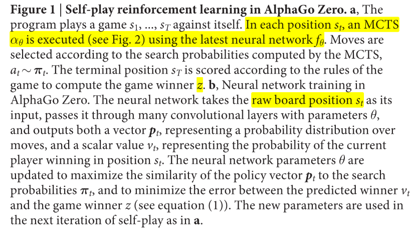
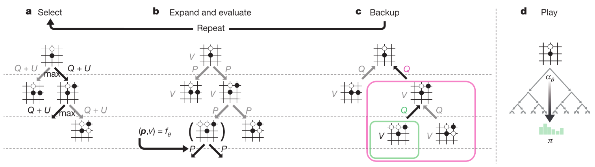
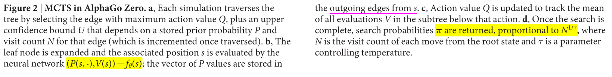

3. 游戏AI-AlphaGoZero
paper:Mastering the game of Go without human knowledge
核心: 与AlphaGo的不同:
- 不使用人类专家数据和领域知识, 只用self-play学习.
- 只使用棋盘作为输入,
- 改用单网络多头输出.
- 用简单的树搜索, 没有MCrollouts过程. 在训练的循环内部使用前向搜索, 快速提升新能.
1. Reinforcement learning in AlphaGo Zero
使用单网络(ResNet+RElu+BN), 输入原始棋盘s, 输出动作概率和值(p, v).
训练时是一个策略迭代过程. 在每一个状态, 执行MCTS过程. MCTS输出动作概率分布(这个分布比网络输出的好, 因此MCTS可以看作一个高效的策略提升操作). self-play加搜索(使用MCTS的策略选择动作, 游戏结果作为值的抽样), 可以看作一个策略估计操作. 通过在训练NN时把输出与搜索概率分布和游戏结果做匹配, 可以做到:
- 策略改进: MCTS根据神经网络策略p, 执行搜索过程, 然后将(更强大的)搜索策略投影回神经网络的函数空间.
- 策略评估应用于(更强大的)搜索策略: self-play的结果也被投射回神经网络的函数空间.
整体训练思想的核心是NN参数更新使得动作概率和值函数(p, v)更加接近提升后的搜索概率和自博弈结果; 然后新的参数用来在self-play下一次迭代中增强搜索策略. 如图1所示.
 |
|---|
|  |
| a. 每个状态s, 使用最新网络参数执行MCTS(见图2), 根据得到的动作概率选择动作执行, 最终分出胜负z. b. NN使用原始棋盘预测动作概率和值函数. 网络参数更新使用最大化输出概率和搜索概率的相似度/最小化值函数与对弈结果的MSE. 然后用更新的参数进入下一轮循环的(a)过程 |
MCTS过程使用神经网络引导.
- 每条边存储了分别代表先验概率, 访问次数, 动作价值.
- select: 每次搜索从根节点开始, 选择UCB最大的动作, 直到叶子节点.
- Expand and evaluate: 使用NN计算一次动作先验概率和评估值函数.
- Backup: 更新遍历过的每个边的
|  |
|---|
|  |
网络训练:
- 随机初始化网络参数, 之后每一次迭代都通过自博弈生成自博弈游戏.
- 在每个时间步, 使用前一次迭代的神经网络参数执行MCTS搜索 .从中抽样动作执行.
- 如此迭代直到终止状态得到奖励, ,终止状态包括分出胜负, 搜索的值函数小于某个阈值(提前认输), 或者达到最大步长.
- 每个时间步存储训练数据, , 其中.
- 最后, 网络从上一次迭代生成的所有时间步的数据抽样进行训练. loss函数为MSE+cross-entropy
(1)

2. Empirical analysis of AlphaGo Zero training
训练: 490万盘自博弈, 其中每个MCTS执行1600次模拟(相当于每一步决策0.4s), 网络有20个resNet块, 使用70万个2048(32x64)的minibatchs, 优化器stochastic gradient descent with momentum
4个TPU训练了3天(AlphaGo Lee用了48个TPU训练了几个月) 100-0打败AlphaGo Lee等
版本进化:
- AlphaGo Fan. 176 GPUs
- AlphaGo Lee. 神经网络大得多, 256个卷积核* 12层. 48个TPU
- AlphaGo Master. 与AlphaZero的神经网络架构, RL算法和MCTS算法相同, 但是使用了手工函数和监督数据.
- AlphaGo Zero.无人类监督数据, 4个TPU单机训练.
证明从纯强化学习开始训练是可行的